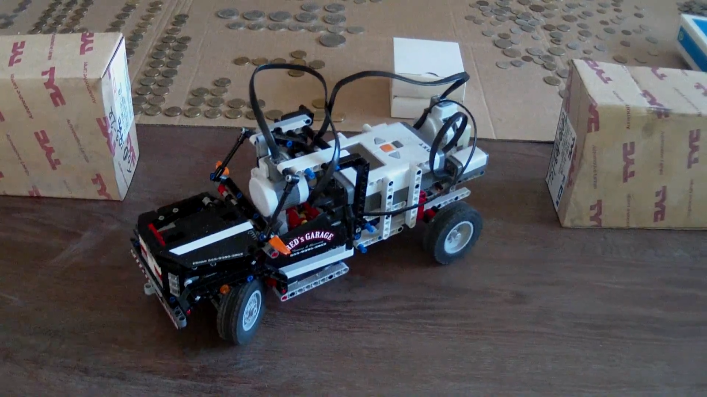
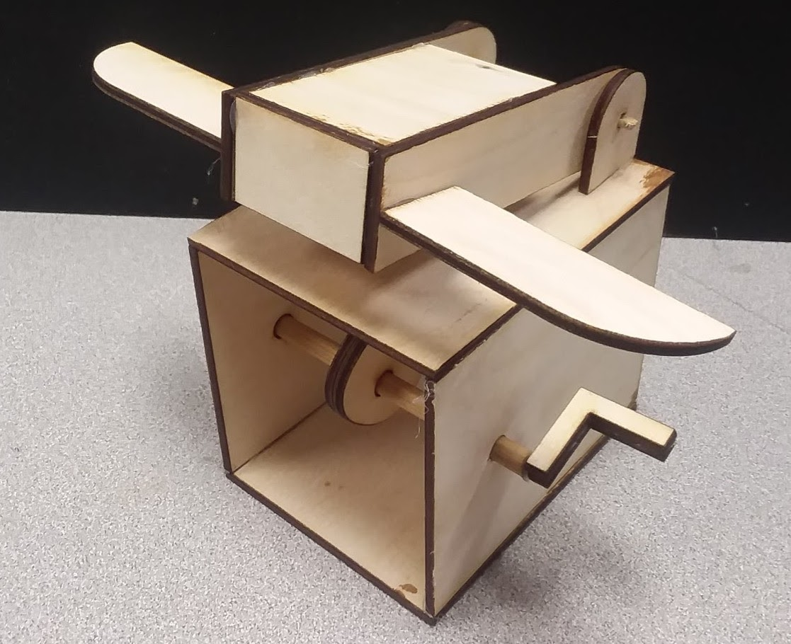
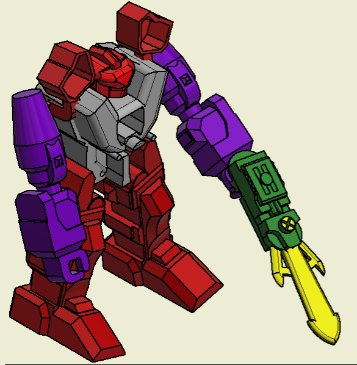
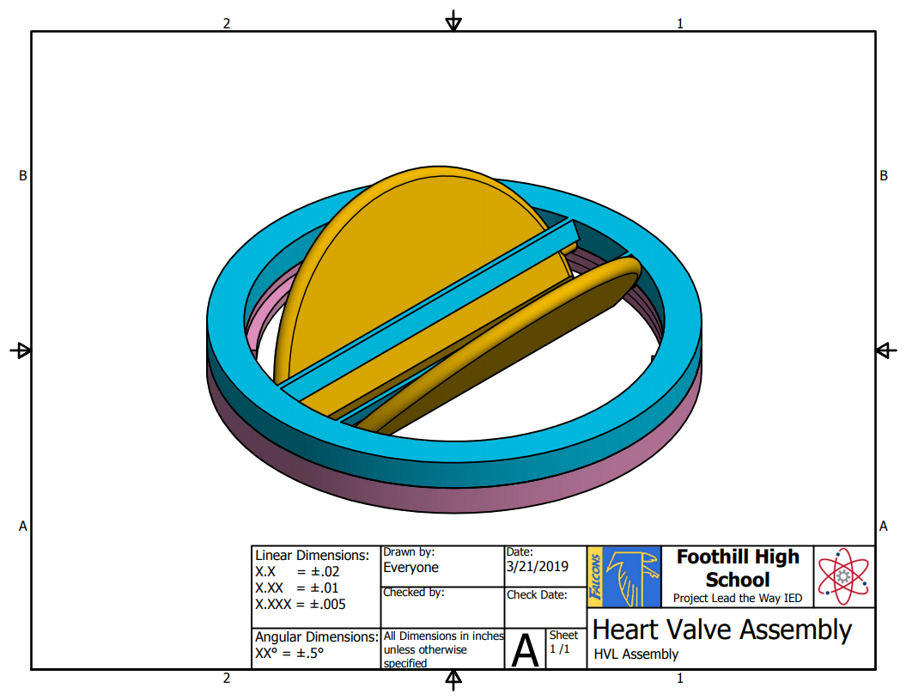
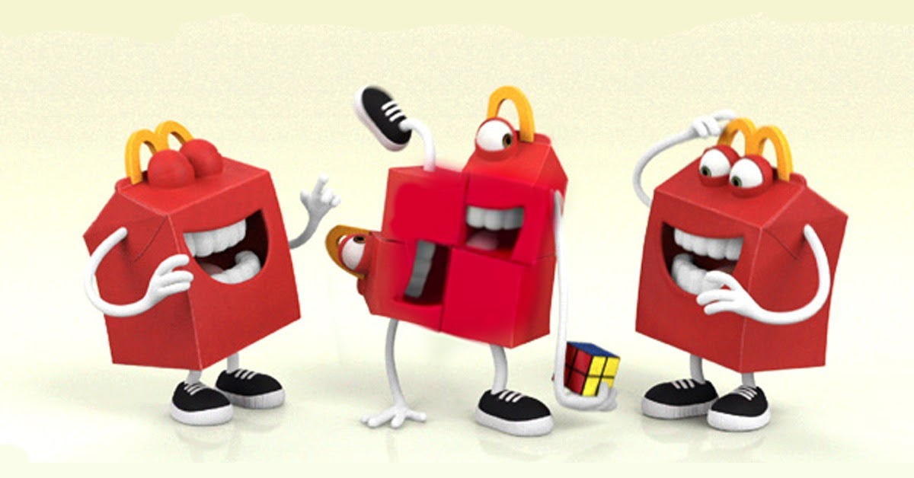
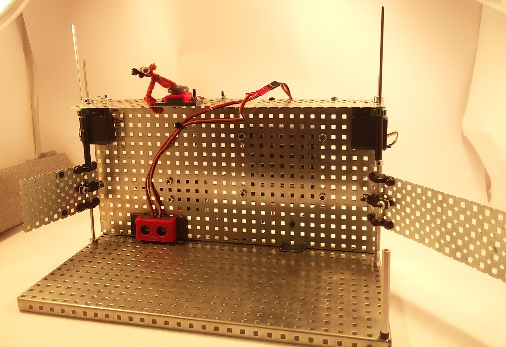
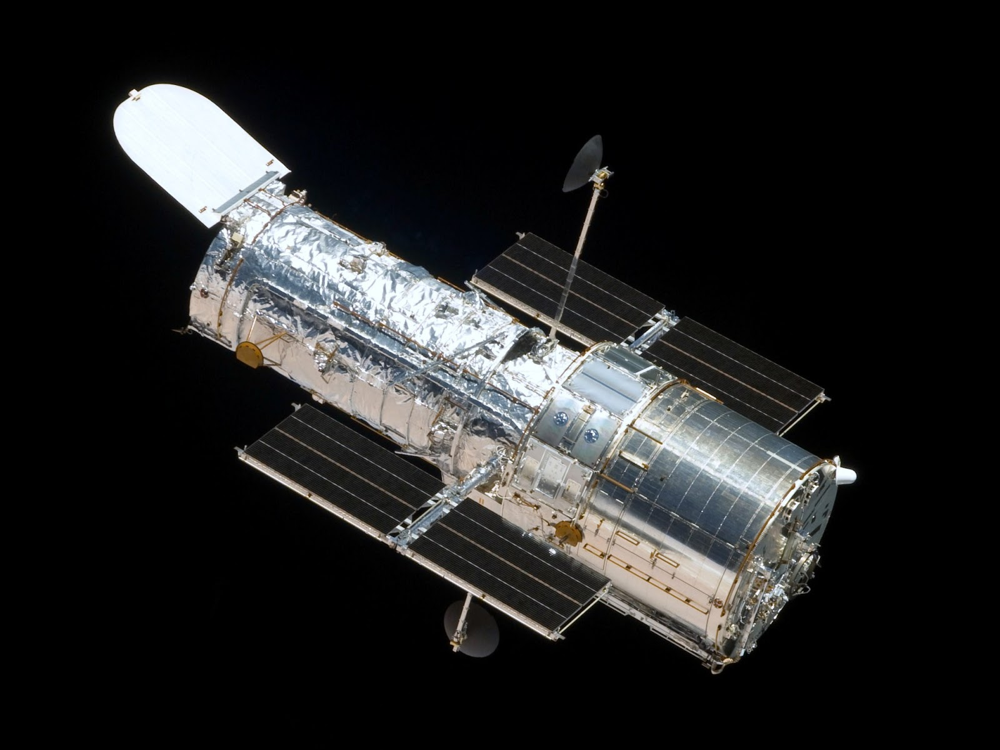
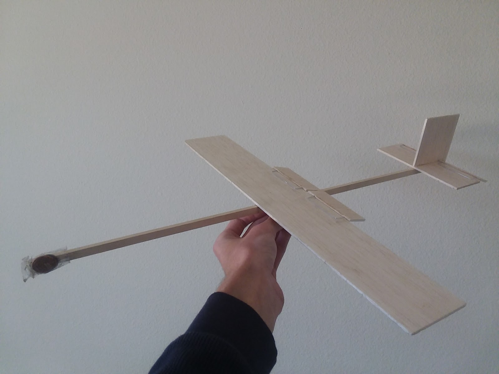
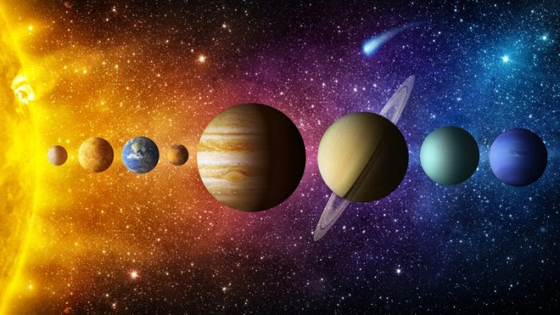

Hello there.
Below are the projects I have done over the years.
Parallel Parking LEGO Car
The oldest recorded project that I have ever participated in - a parallel parking LEGO car. My dad was in charge of the code, and I was responsible for the implementation of the system into the car.
Wooden Toy Project
One of the first engineering projects I have worked on in high school. This weird looking thing was initially supposed to be a man doing push-ups, but he "evolved backwards" into a box with wings. This project tested the skills of designing, 3D modeling, and laser cutting.
Reverse Engineering Project
This project was about 3D modeling a given toy by making a series of precise measurements of the parts which would later be used for those parts' digital representations. Our team got the hardest toy from the batch, and while it was quite challenging to go through, this project left me with a highly improved skill of 3D modeling.
Artificial Heart Valve Project
Our engineering design class got a chance to work with another class - Principles of Biomedical Science (PBS). We, engineers, were tasked with creating a functional prototype of a heart valve that would later be tested by the PBS students on a real heart. Unfortunately, due to severe lack of communication, we never found out whether our valve was actually functioning within a heart. Nevertheless, we got to model a complicated object and test our abilties in creating simple, yet efficient designs.
Happy Meal Toy Project
Our team got to create a toy for a new McDonald's toy collection, given that it had to be something from a Disney Franchise. We went with Stewie from Family Guy, and the result was... interesting. This project tested our 3D modeling skills to the limits, but we were successful in the end.
VEX Car Wash Project
This project was about designing one of the given systems from VEX Robotics parts running on RobotC programming language - our team got to build a "car wash". This was the first serious hardware/software mix for me personally, and I'm really glad we were successful in finishing this build.
Hubble Video Project
This project was about researching a certain aerospace industry achievement and creating a video about it - me and my partner decided to go with the Hubble Telescope. Personally grew a little bit in the video editing skill.
Airfoil Design Project
Me and my partner were tasked to design an airfoil with some extensive initial constraints and other useful information. We had to use an airfoil simulator and a lot of equations to come up with our unique airfoil that fulfilled all of the requirements. Was it the most efficient airfoil? No. But it's still pretty good, and that is what matters.
Glider Design Project
For this solo project, I had to design and create a simple glider, and then modify it along the way to achieve the longest distance possible. I went with an interseting route of creating modifications with extra balsa wood instead of something like paper, and that route was also quite extensive - I went for 8 trials of 10 throws each instead of the initial 3 trials. The glider worked pretty well in the end, so my high effort was technically worth it.
Sizing Up the Universe Video Project
This project was about understanding the massive scale of space and showing it in some meaningful way. I decided to go with juggling balls as planets and my school's football field as vast space. Got some practice with video editing along the way as well.
<Imagine something good here>
<Imagine something good here>
You can find my resume right here.
I assume you have already seen all of my work before going here, right? If not, then I guess you just want to know me in general. The technical stuff is left for the resume, below is everything else:
Gmail | Instagram: @suslike.16 | Discord: Suslike#0081 | Telegram: @Suslike